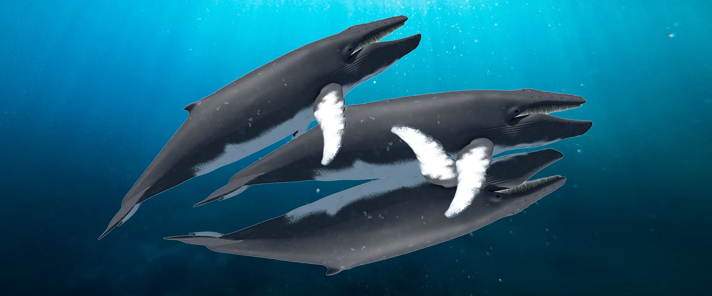

Overview
Whale mating is a complex and fascinating process that involves unique behaviors, vocalizations, and often, competition among males.

Courtship Rituals
Male whales often engage in displays to attract females. These can include:
- Vocalizations: Songs, especially in species like humpback whales.
- Physical Displays: Breaching, tail-slapping, and fin-waving.
- Competition: Males sometimes fight for access to females.
The Mating Process
The mating process itself involves close physical interaction. Some species, like gray whales, use cooperative strategies where a third whale may assist.
Did you know? Blue whales have one of the most efficient mating processes due to their large size!
Fun Facts
- Humpback whale songs can last for up to 20 minutes and are part of their courtship.
- Gray whales have been observed mating in groups of three or more.
- Some species migrate thousands of miles to reach their breeding grounds.